Here, we have fetched the latest battle data from the external source using the requests library. We first saved the JSON to a local file by the name local_file_name.json. Then, we loaded this JSON into a pandas DataFrame and sorted it according to the timestamp, tstamp, in ascending order. After sorting, we saved the DataFrame as a CSV file named battles_data.csv. The verification at the end demonstrates once more that the data has been saved to the necessary file for further analysis.
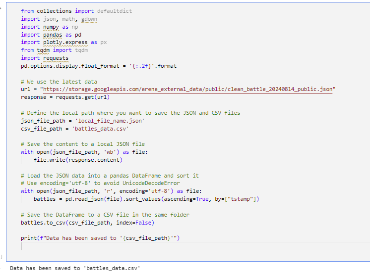
Converting Unix Timestamps to Readable Dates
This cell converts Unix timestamps in seconds into a more readable date format (YYYY-MM-DD) for easier analysis in a DataFrame. For instance, 1609459200 will represent in this format as 2021-01-01.
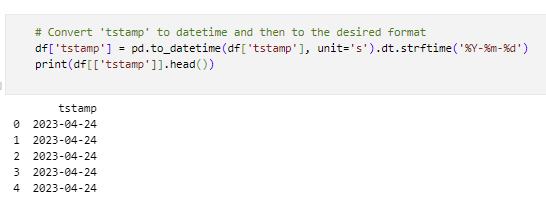
Extracting Month and Year from Timestamp
First, we convert the 'tstamp' column to a proper datetime format using pd.to_datetime. Then, we create a new column called 'month_year', which extracts the month and year from the timestamp and stores it as a period, say '2024-08'. We then fetch all the unique month-year combinations and convert them into a list. Finally, for further use or analysis, this list of unique month-year combinations is displayed:
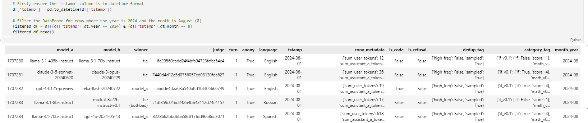
Extracting Unique Dates
Here, we will extract the unique dates in the 'tstamp' column from the filtered DataFrame by changing the datetime values to date format. We then convert these unique dates into a list and display the list of unique dates for further analysis or use.
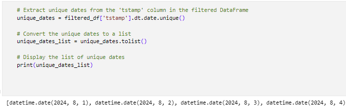
Excluding Specific Dates from DataFrame
In this cell, the code imports the datetime module, where it excludes the specific dates from a DataFrame and filters that DataFrame to remove any rows that contain these excluded dates. The certain dates that are August 1, 2, 3 in 2024 are omitted from analysis, while the data includes only the time period between Aug 4 to 14 in 2024.
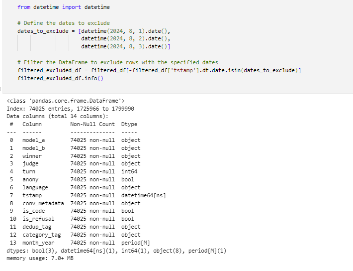
Creating winner_model Column and Cleaning DataFrame
This code creates a new column called 'winner_model', which selects either the 'model_a' or 'model_b' depending on who was the winner. Then, it removes the columns 'model_a', 'model_b', and 'winner' because they are not needed once the column 'winner_model' has been created. The cleaned DataFrame is then returned without showing the index.
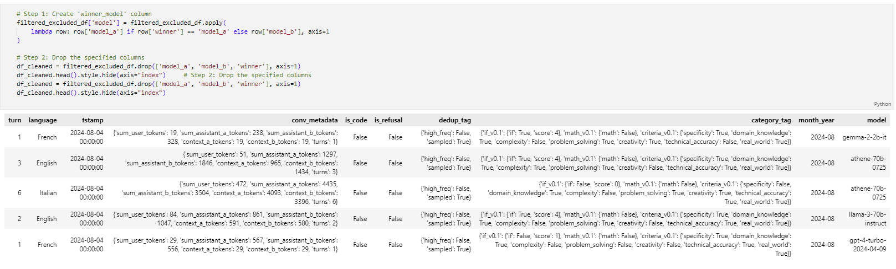
Extracting Conversation Metadata
Here we define a function, extract_conv_metadata, that does safe parsing on 'conv_metadata'. Then, it extracts the appropriate token information for the winning model through user tokens, assistant tokens, and context tokens. We use this function to apply to every row in the DataFrame and create new columns out of the metadata extracted. Finally, we join these new columns with the original DataFrame, drop the original 'conv_metadata' column, and display the updated DataFrame without the index.
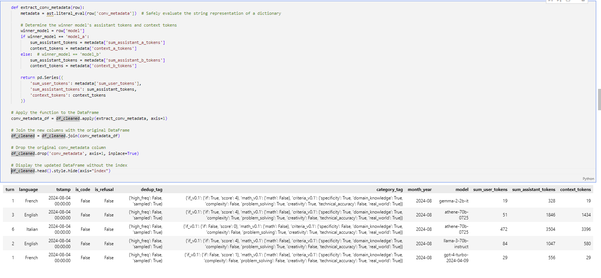
Filtering Out Unknown Languages
Here, we filtered the DataFrame for those rows for which 'language' does not equal 'unknown'. Then, we display this updated DataFrame without showing an index to make certain that we retain only entries of known languages going forward.
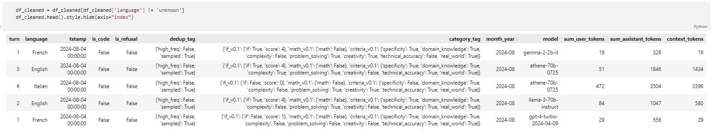
Listing Unique Models
Here, we will be able to get the unique models by pulling a list of unique values from the 'model' column in the DataFrame. Then we are going to find the length of this list, which is going to give us a total count of unique models. Now we print both the list of unique models and its length for the user to analyze further.
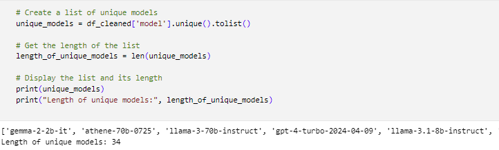
Extracting Deduplication Tags
Here, we define a function extract_dedup_tag, which safely evaluates the column 'dedup_tag' to extract the values for keys 'high_freq' and 'sampled'. Then, we apply this function onto every row of column 'dedup_tag', creating two new columns: 'dedup_tag_high_freq' and 'dedup_tag_sampled'. Later, we do not need 'dedup_tag', and hence we print the updated DataFrame.
Converting Timestamp to Period
Here, we convert the 'tstamp' column to a period with daily frequency and store it in a new column named 'tstamp_period'. Optionally, one may also drop the original column 'tstamp', if it won't be used anymore. Finally, we print a few lines of the updated DataFrame to verify.
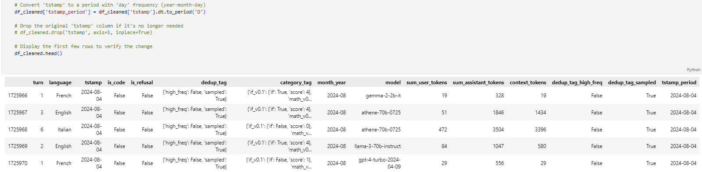
Cleaning Up the DataFrame
These cells of code are used to clean up the DataFrame by removing the columns 'category_tag', 'tstamp', 'dedup_tag', and 'month_year' from the dataset because these columns are unnecessary. So we can concentrate on the remaining relevant data.
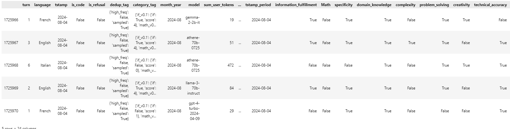
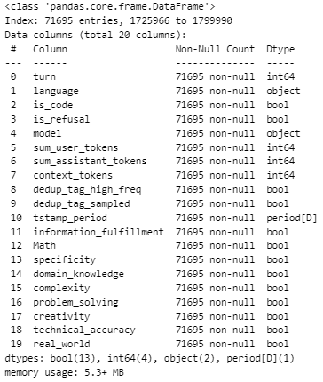
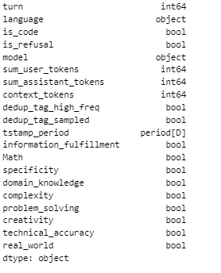
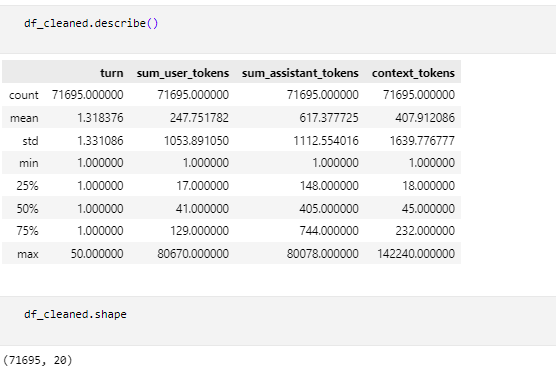
Comparison of Old and New Dataset
In this section, we compare the old dataset with the new cleaned dataset to highlight the differences and improvements made through the data cleaning process. We examine factors such as missing values, data types, and the presence of unnecessary columns.
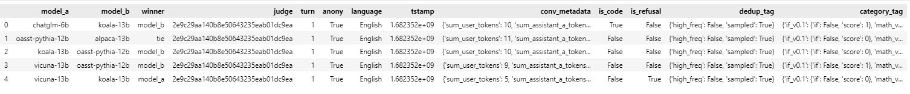
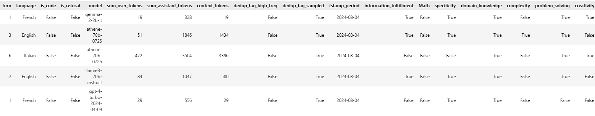
The images above display the structure and content of the datasets before and after cleaning. As observed, the new dataset has unwanted columns removed, timestamps converted to readable dates, and entries with unknown languages filtered out.